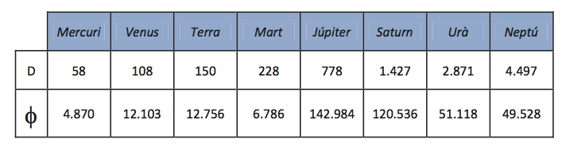

¡ATENCIÓN! Podéis ver esta charla en vivo el viernes 27 de Febrero aquí
Antecedents: primeres idees sobre l'Univers
L'astronomia i les seues aplicacions
Del sistema geocèntric a l'heliocèntric
La gravitació universal. La síntesis newtoniana
Imatge actual de l'Univers
Satèl·lits artificials i les seues aplicacions
Les amenaces que rep la nau espacial Terra
Conceptes qualitatius
Aprofundiment dels conceptes de treball i energia
Llei de conservació i transformació de l’energia
Concepció actual de la naturalesa del calor: una transferència d’energia
La degradació de l’energia
De les màquines manuals a les màquines tèrmiques i elèctriques
Problemes associats a l’ús de l’energia i possibles solucions

Por favor, acuérdate de evaluar esta asignatura a través de la web de la UV.
Por otra parte; aquí tienes un enlace para hacer una evaluación más completa.
Documento de trabajo compartido
Simulacions sobre els sistemes Copernicà i Ptolemaic (retrogradació dels planetes, etc)
Text sobre Galileu
Vídeos sobre Galileu (l'enllaç va a Youtube, trobareu les pel·lícules de Joseph Losey o Liliana Cavani, o una basada en el guió de Bertolt Brecht)
Instruccions per al micro-searching.
Instrucciones para la práctica de Conservación de la Energía. Instrucciones para el informe.
Apuntes sobre Energía y Trabajo.
Teoría atomicomolecular de la materia: siglos XX i XXI (sólo entra lo que hemos visto en clase).
Tema 3: Teoría atomicomolecular de la materia.
Diseñad y haced un experimento para demostrar la conservación de la energía. Presentad un informe al respecto
(instrucciones arriba).
Para el 7 de Mayo
Haced una representación a escala del Sistema Solar
a partir de los siguientes datos,
en los cuales D es la distancia al Sol en millones de km y Φ
el diámetro del planeta en km; el diámetro del Sol es 1.392.000 km.

Para el Jueves 12 de Marzo
Leed el artículo
Why Do Many Reasonable People Doubt Science? para comentarlo en clase
Para el 26 de Febrero (o el 2 de Marzo)
Una breu història de gairebé tot de Bill Bryson.
Por amor a la física, de Walter Lewin.